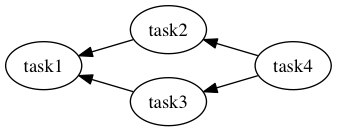

Prerequisities
- Ruby >= 2.1
- Bundler
Installation
Create Gemfile and write following contents:
source 'https://rubygems.org'
gem 'tumugi', '~> 0.6.1'
And then execute:
$ bundle install
Define workflow by tumugi DSL

You can define workflow above as ruby code:
task :task1 do
requires [:task2, :task3]
run { puts 'task1#run' }
end
task :task2 do
requires :task4
run { puts 'task2#run' }
end
task :task3 do
requires :task4
run { puts 'task3#run' }
end
task :task4 do
run {
puts 'task4#run'
sleep 3
}
end
Save these code into workflow.rb,
then run this script by tumugi command like this:
$ bundle exec tumugi run -f workflow.rb task1
2016-07-11 15:04:57 +0900 INFO [bc53bb58-03c4-467e-9cec-f658729b3d99] Load workflow from getting_started.rb
2016-07-11 15:04:57 +0900 INFO [bc53bb58-03c4-467e-9cec-f658729b3d99] start workflow: bc53bb58-03c4-467e-9cec-f658729b3d99
2016-07-11 15:04:57 +0900 INFO [bc53bb58-03c4-467e-9cec-f658729b3d99] start: task4, thread: 70254131630100
task4#run
2016-07-11 15:05:00 +0900 INFO [bc53bb58-03c4-467e-9cec-f658729b3d99] completed: task4, thread: 70254131630100
2016-07-11 15:05:00 +0900 INFO [bc53bb58-03c4-467e-9cec-f658729b3d99] start: task2, thread: 70254131630100
task2#run
2016-07-11 15:05:00 +0900 INFO [bc53bb58-03c4-467e-9cec-f658729b3d99] completed: task2, thread: 70254131630100
2016-07-11 15:05:00 +0900 INFO [bc53bb58-03c4-467e-9cec-f658729b3d99] start: task3, thread: 70254131630100
task3#run
2016-07-11 15:05:00 +0900 INFO [bc53bb58-03c4-467e-9cec-f658729b3d99] completed: task3, thread: 70254131630100
2016-07-11 15:05:00 +0900 INFO [bc53bb58-03c4-467e-9cec-f658729b3d99] start: task1, thread: 70254131630100
task1#run
2016-07-11 15:05:00 +0900 INFO [bc53bb58-03c4-467e-9cec-f658729b3d99] completed: task1, thread: 70254131630100
2016-07-11 15:05:00 +0900 INFO [bc53bb58-03c4-467e-9cec-f658729b3d99] end workflow: bc53bb58-03c4-467e-9cec-f658729b3d99
2016-07-11 15:05:00 +0900 INFO [bc53bb58-03c4-467e-9cec-f658729b3d99] Result report:
+-------+----------+------------+-----------+
| Workflow Result |
+-------+----------+------------+-----------+
| Task | Requires | Parameters | State |
+-------+----------+------------+-----------+
| task4 | | | completed |
+-------+----------+------------+-----------+
| task2 | task4 | | completed |
+-------+----------+------------+-----------+
| task3 | task4 | | completed |
+-------+----------+------------+-----------+
| task1 | task2 | | completed |
| | task3 | | |
+-------+----------+------------+-----------+
2016-07-11 15:05:00 +0900 INFO [bc53bb58-03c4-467e-9cec-f658729b3d99] status: success, command: run, task: task1, options: {"config"=>"tumugi_config.rb", "quiet"=>false, "verbose"=>false, "log_format"=>"text", "file"=>"getting_started.rb"}